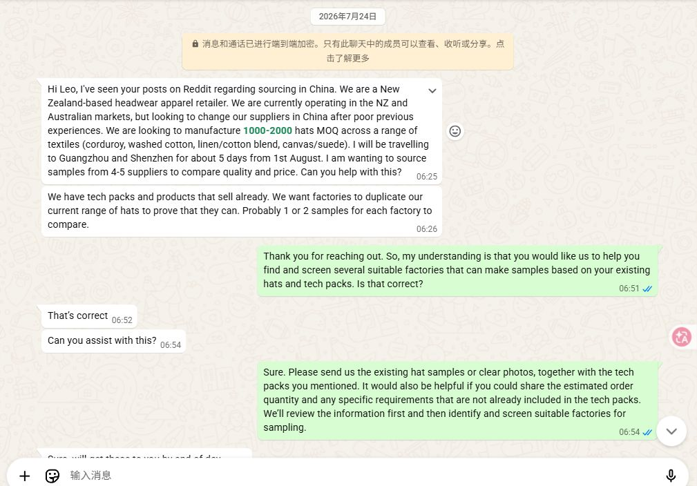
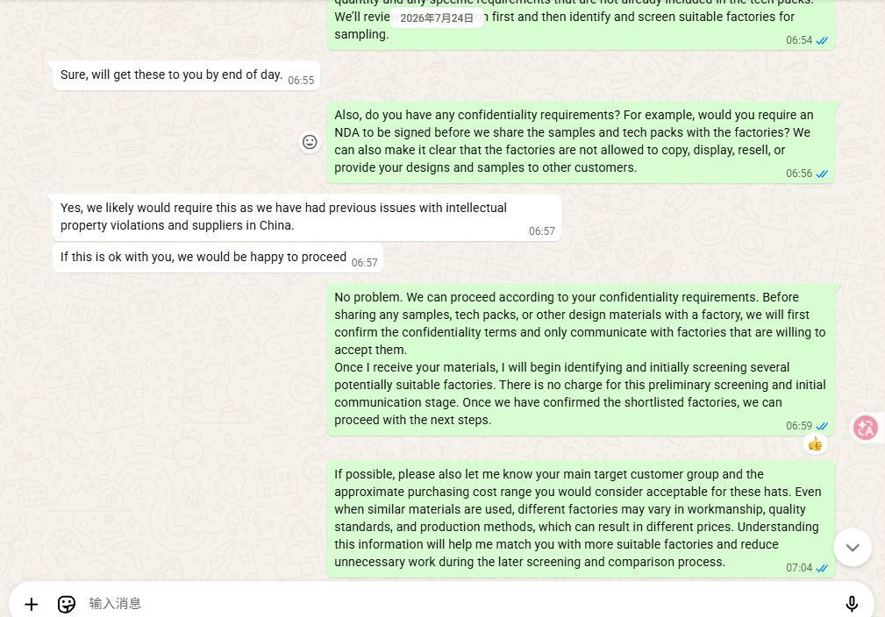
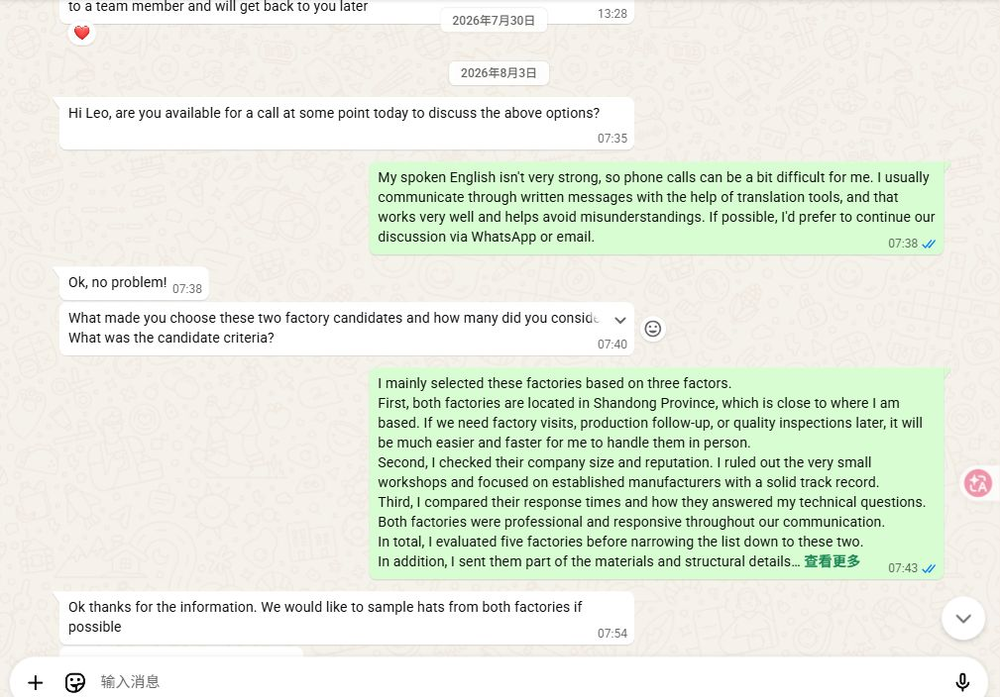
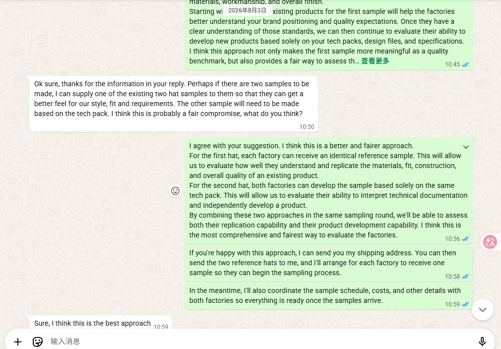
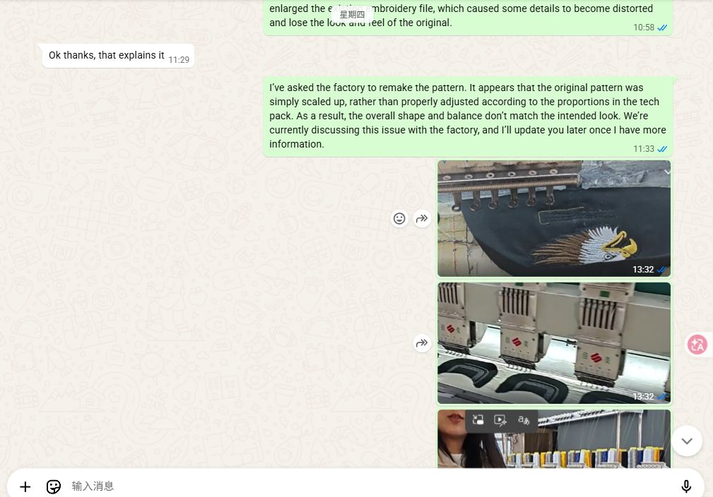
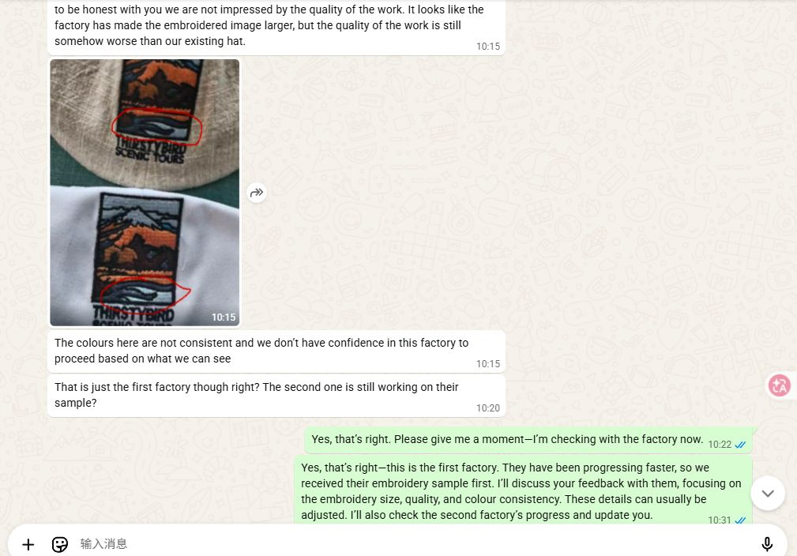
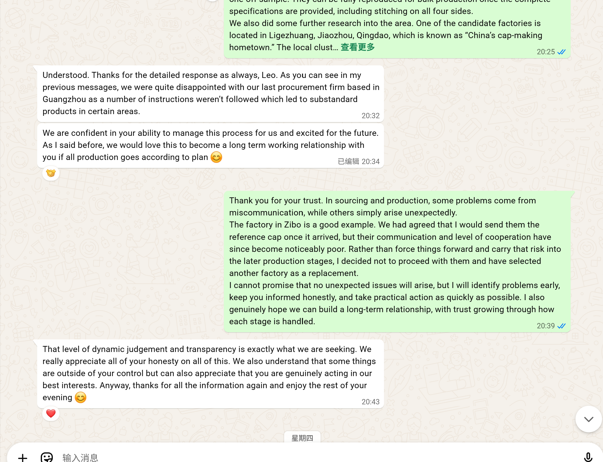

Set the confidentiality boundary first
Before designs were distributed, we discussed NDA coverage and told candidate factories that samples and designs could not be displayed, copied, or used for promotion.
Real sourcing case
The client did not need another list of factory names. They needed a controlled way to compare suppliers, protect product details, test capability, and stop weak work before it reached bulk production.
Starting point
The client had physical hats, tech packs, and design mock-ups. The missing piece was not more product imagery. It was evidence that a factory could interpret the specification, reproduce a known reference, communicate reliably, and protect confidential designs.
Before designs were distributed, we discussed NDA coverage and told candidate factories that samples and designs could not be displayed, copied, or used for promotion.
Five factories were reviewed. Two were selected for deeper sampling based on location, scale and reputation, responsiveness, and the quality of their technical answers. They were candidates, not approved suppliers.
One factory would copy a physical reference hat. The other would work from the tech pack alone. This separated replication skill from pattern development and document interpretation.
Comparable sampling
A good-looking sample can still hide whether the supplier understood the tech pack or simply copied an existing product. The two-path plan made the comparison more useful.
Test A · Physical reference
The reference hat tested dimensions, construction, stitching, buckle placement, materials, and the factory's attention to a finished product already in hand.
Test B · Tech pack only
The second route tested interpretation, pattern development, technical questions, and whether the factory could surface missing information before making the wrong sample.
Requirement control
We documented the intended material composition and turned visible details into explicit requirements. These points stay open until the relevant sample is approved.
| Requirement | Project handling | Approval boundary |
|---|---|---|
| Fabric composition | 80% linen / 20% cotton. | Confirm against the intended production material. |
| Back buckle | A standard no-logo brass buckle could be used for the sample; placement should sit flush with the fabric edge. | Custom logo hardware is a separate bulk decision. |
| Internal labels | Required stitching on all four sides, not a loose interpretation from the supplier. | Inspect on the completed sample. |
| Embroidery | Dimensions, colours, stitch quality, and alignment across the seam were treated as separate checks. | Approve revised embroidery before the full-cap sample continues. |
Supplier decision
One factory had agreed to receive the physical reference, but its communication and cooperation then deteriorated. We stopped that route and selected a replacement instead of forcing the project forward because time had already been spent.
The decision cost some short-term convenience. It protected the later sample and production stages from a supplier already showing weak follow-through.
Quality gate
The enlarged logo looked worse and the colours were inconsistent. The evidence suggested the old embroidery file had been scaled rather than properly re-digitized. We asked the factory to remake it and kept the full-cap sample on hold pending client review.
Factory photos and equipment were useful context, but they did not replace approval of the actual revised work.
Anonymized WhatsApp evidence
The client's name, profile image, contact details, and supplier identities are excluded. The excerpts retain the sourcing decisions and project status.
Initial brief

Confidentiality

Five factories to two

Two sample paths

Embroidery diagnosis

Quality follow-up

Client response

Current status
No supplier has been approved for bulk production, and no production or delivery outcome is claimed here. The next gate is client review of the revised embroidery and comparable physical samples. Only then can supplier selection move forward.
Have a reference hat or tech pack?
We can turn that information into screening criteria, a sample plan, and clear approval gates before you commit to bulk production.